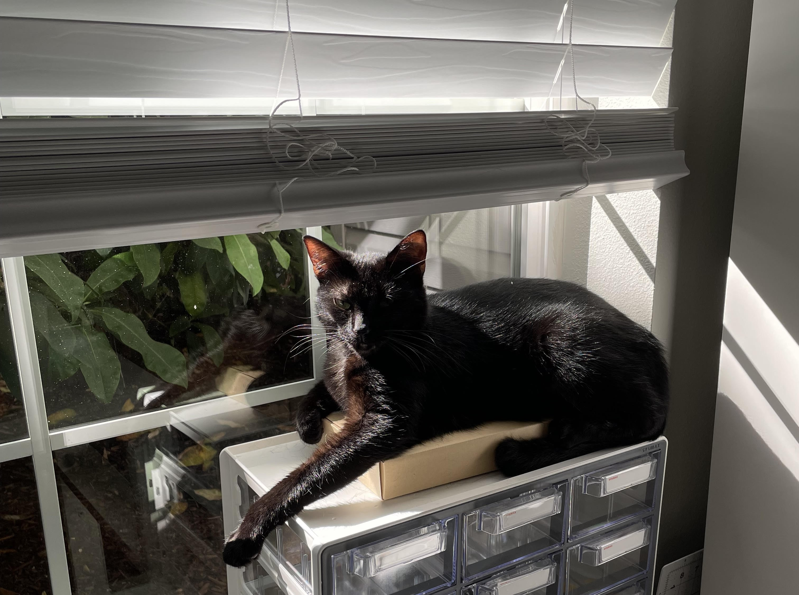

Get to know me
My personal interests are gaming, cooking, drawing, golfing, and taking naps. I play a variety of pc games and nintendo switch games. I play a lot of stardew valley on my switch as well as pokemon. I feel like a lot of people think adults who play video games are weird or think that they are childish. For me, I find it theraputic and it's actually healthy to feed your inner child. Anyways, I built my first PC in 2020 during the lockdowns and that's when I became really interested in computers and coding. Another thing I enjoy is cooking! I like to bake as well. I've been cooking since I was 9 years old. I cook all types of food from filipno food to southern food. Cooking is also theraputic to me.
Here's a photo of my cat, Luna!!
